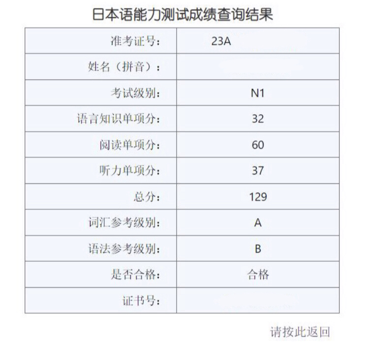

2022.11.10
最近这段时间，是我最快乐的一段时间了，快乐到我有点担心以后再也不会有这么开心的时光了。
以前因为旅游来过厦门，但是当时留下的印象并不好，导致我一直对厦门有一点偏见。高考过后也是，很排斥厦门这座城市。而且《约定》里有一句，“仍未忘相约看漫天黄叶远飞”。南方哪里有什么大雪纷飞，黄叶远飞啊！所以当时觉得，必须选一个北方城市。但是来到这座北方城市，才发现这里也没有大雪纷飞，到了冬天，最大程度的雪，也堪堪在操场的草皮上才积得起来，如果落到柏油路上，马上就融化了。
这段时间因为实习呆在厦门，不再作为一个游客，而是小住一段时间，所以对这里有了新的认识。也许是因为我住在岛内，生活体验非常好，每天八点半出门，到公司时间刚好。其次，组里的人都很友善，像是mentor，还有和我对接的同学都非常好。再然后是回家也特别方便，虽然我也没有特别想回家，但是想到以后可能没有什么机会回家了，现在刚好有这样的机会，周末回家陪陪我妈蛮好的。
地铁一号线有一段在海上，每次刚能看到海的时候，车厢里就会响起广播：“蓝天碧海飞白鹭，波光粼粼泛渔舟，厦门地铁带您体验，城在海上，海在城中。”这段文案真好。
然后是保研这件事，今天看了一下聊天记录，今年二月份的时候，我就发给一位很欣赏很有共同话题的女生，告诉她我”想了一下，打算把目标放在x大“。夏令营没入营的时候，就做好了等预推免的准备，其他学校很随意地投了投，能进的也面了面。9.28之前很平静，一点都不紧张，本校也没联系保底，其他学校的老师也一个没联系，但是就是很奇怪，我一点都不紧张。录取的那一天，招生老师录得很慢，我只填了一个志愿，和同学聊了一下，本来想打开电脑多填一个，最后觉得算了，填了其他学校也不想去，于是也就没填。
被录取了也没有很开心，还是很平静。只是没想到9.28-9.30这段时间才是我整个保研过程最痛苦的几天，因为有很多的巧合。现在想来觉得头皮发麻，当时好尴尬，而我好菜，好弱智。
等待的过程很煎熬，每次想到这件事我都很焦虑。但是现实生活中的事情都很容易用if-else语句来决断。现在完全没有必要焦虑，做完了能做的事情，剩下只能等待。
我一直觉得在大学当一位有口碑的好老师，必定是有非常强的自制力的。大一的时候因为疫情呆在家里，当时的高数老师每天提前上课，不是上课时间还加课，钉钉上的作业也批改得很认真，对比我有时早上会睡过头。这次也是，每次看到那些我看不懂的东西我就陷入对自己人生态度的反思，觉得自己好菜。
还有一点——面试。虽然很菜，但是拿出态度认真对待每一个面试！这很重要！
其实大四下的目标，正在慢慢实现中。比如环岛骑行，比如考驾照，比如日语已经把N3的try写完了，其他的目标，也一定会慢慢实现的！最后想要以这句话结束。
生命会找到自己的出路。
2023.05.08
今天刷知乎，偶然看见了几个同学去年的年终总结，就想起来我这篇去年底没有发出的年终总结。
过了半年，现在往回看，其实也不是那么大的事情。
这半年时间也发生了一些事。
首先是12月底在厦门的实习结束。
其实当时预想是按照合同呆到1月份，但是因为疫情放开，学车的场地停了一段时间，过年时间也接近了。我担心在呆在厦门的这段时间里没法成功拿到驾照，以后大概率不会有呆在厦门的机会。所以就提前离职了，准备留出时间考驾照。
现在抽离出来看这段实习究竟带给了我什么。首先它是我在这个行业的第一份实习，有了在一个城市独自生活的经验（厦门很棒！）。工作内容上看，并没做什么有技术含量的活，就是CRUD，但是毕竟不是自己瞎折腾了，至少做的东西真的有人使用了嘛。
然后就是考驾照了！
科目二是年前的最后一批，想约科目三只能年后，但是我房子只租了半年。本来很担心租房子的问题，但是真的运气爆棚！转租的同学的入住时间刚好能和我考科三的时间错开一点，于是就约了年后的第一批科三考试。然后科三考完隔天考了科四。
考驾照的过程中，我也总结出了一套方法论，我觉得学什么东西都能靠这个方法进行，以下拿我考驾照举例。
充足的准备：查询了路线的视频，记笔记，把两条路线都在A4纸上画了一遍，详细标了每一个项目的位置。
重复性练习：准备好了之后，就是重复性练习，比如练车就是开路线，别的学员开也可以当作自己在开跟着练习（别人开的时候路过路标我也跟着狂摇头）。
正式考试。
复盘：科三总的就练了两天，第一天我开得很烂，中间歇的那一天，我就照着路线视频不停模拟开车（商机：建议开通VR练车服务），然后第三天反而比另外一个学员开得好了。
第三天反而是简单的一号线练习的时候出了点问题。最后一趟本来是练的三号线，因为教练觉得一号线简单没必要再练了。然后我就和教练商量说我想开一号线，因为早上出了错误。最后一趟其他人都开了三号线，我就开了一号线，然后很神奇的，正式考试那天，我就抽中了一号线！
去考试的时候我就抱着必须一把过的想法，因为补考浪费钱就不说了，还要花费很大的时间成本。我最不想的就是浪费时间。总之好在最后四个科目全部一把过啦！
然后在家度过了将近两个月的时间，晚了一个半月返校。因为想着以后陪伴家人的时间真的很少……最快乐的时间是晚上和我妈一起散步，一起逛夜市。
在家的时候赶了个ddl，我发现每次赶完ddl，都会有一种很强的孤独感，那段时间这样的感觉就特别强烈，总是想要和人群呆在一起，比如晚上就跟我妈出去散步。
然后就是N1了，本来纠结考N1还是N2，但是N2真题卷一写能合格，想着还有几个月才考试，心一横就在3.21这一天报了N1。想法还是那样的：考不过浪费钱浪费时间，所以必须一次过。
然后就是代码方面。
从2月份开始到今天的5.9三个多月的时间，我几乎没怎么写过代码。在这之前在公司的实习，其实做的工作也对我的代码能力没什么提升。而最近，毕业设计和备考占据了我非常多的时间。
所以因为没怎么写代码，心里很没底，目前的计划是7.2考完N1后立刻开始好好写代码[下次一定！]。
今天看到那几个同学写的年终总结，还有我一直关注的一个行动力超强的同学，大家都在本专业上积累深度。而我，好像在做着一些和本专业不相关的杂七杂八的事情，浪费着时间，和他们的差距越来越大。
给我的大学四年附上关键词，摇摆，焦虑，无力。
不清楚是不是理工科院校热门专业的原因，刚上大学的时候，身边“卷”，“佬来佬去”的风气格外明显，渐渐觉得如果要上研究生，尽可能选择综合性院校，绝对不想再去一所理工科性质的学校了。
但这样的环境中，也不乏目标坚定，不在乎周围风气，不随波逐流的人存在。如果我能坚定一些，少焦虑一些，下定决心舍弃一些……我确实应该看清自己的目标，走在自己的道路上。
和别人相比只会徒增无谓的焦虑，我真正需要做的，是比昨天的自己进步一点点。
坚定目标，做能达成目标的有用功。
2023.08.21
还愿！
记录一下自学过程中使用的教材，视频和一些好用的软件。
语法：
- 《标准日本语》初级两册 + 中级上册。看的视频是B站上迷加老师的教程。
- 《Try》系列学习语法，用了N5 - N2四本，后来学N1的时候换了。
- 《新完全掌握》语法，N2和N1两本。看的B站周业繁老师的讲解。相比较《Try》，这一本的好处是，每一课有一个主题，比如这一课全是假设，这样对我来讲是比较好记忆的。（《Try》是每课一篇文章，解析其中出现的语法）
- 蓝宝书N1：方便查语法，复习。
- 《新日本语能力考试》语法：不是很推荐。做题的过程中觉得和真题不是一个套路的，这本比较直白，例题都是直接选一个语法，真题是好几个语法结合在一起。
单词：
- 词道：我在这个软件上背了N3-N2的单词。
- moji辞书：查询单词使用。
- 红宝书/绿宝书：随便挑一本背。
- 《新日本语能力考试》词汇：一般，总之是写了。
阅读：
- 《新完全掌握》阅读：随便写写。
除了以上这些材料，最重要的是刷真题。我的阅读和听力基本上都是刷真题。再总结一些刷题时的注意点：
- 合理安排时间：第一张卷子我的写题顺序是[词汇—阅读—语法]。因为错阅读题扣分比较多，对错误题数的容错度比较低，如果时间紧张的话，还有可能到最后无法思考，瞎选一通。我从刷真题卷的时候发现自己写题速度比较慢，阅读正确率又比较高，这个顺序比较适合我。最后果然我的语法写不完，最后填空的四题直接涂2，但是词汇文法题数多，多错几题没关系。
- 听力：不同的考场放听力的方式不同，有的是耳机，有的是公放。（我还看到有学校拿录音机公放的）但是大多数都是公放。建议平时写真题听力的时候，就按照想报名的考场播放听力方式进行练习。平时练习用耳机，到考场上公放，发现还是有一些不同的。
成绩不算高，但是我还算满意了。当看生肉能够听懂意思时，还是有一点小小的成就感的。2020年的秋冬天无意间种下的种子，现在想想，还是觉得有点不可思议，多么标准的蝴蝶效应。
总之，算是为大四这一年画上一个圆满的句号！